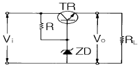
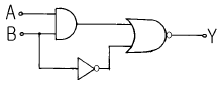
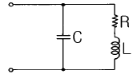
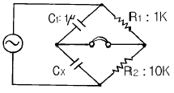
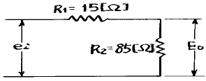
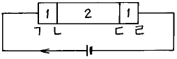
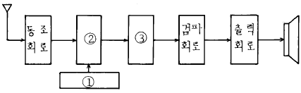
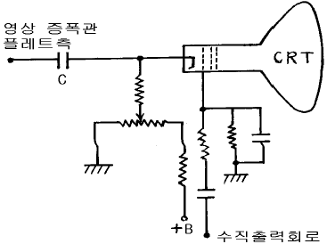

전자기기기능사 (2004-02-01 기출문제)
1과목: 전기전자공학
1. 트랜지스터의 h파라메터 중hfe는?
- 이미터 접지시의 전류궤환률
- 베이스 접지시의 전류궤환률
- 이미터 접지시의 전류증폭도
- 베이스 접지시의 전류증폭도
(정답률: 53%)

2. 다이오드를 이용한 반파 정류회로의 맥동률은 얼마인가?
- 1.21
- 1.57
- 3.45
- 3.57
(정답률: 34%)
3. 그림과 같은 정전압회로의 설명으로 잘못된 것은?

- ZD는 기준전압을 얻기 위한 제너다이오드이다.
- 부하전류가 증가하여 Vo가 저하될 때에는 TR의 BE간 순방향 전압이 낮아진다.
- 직렬제어형 정전압회로이다.
- TR은 제어석이고, R은 ZD와 함께 제어석의 베이스에 일정한 전압을 공급하기 위한 것이다.
(정답률: 56%)
4. 중간주파 증폭기로 사용할 때 주파수 대역폭이 가장 넓은 결합방식은?
- 쵸크 결합
- 저항 결합
- 스태거동조 결합
- 저항용량 결합
(정답률: 43%)
5. 기준레벨보다 높은 부분을 평탄하게 하는 회로는?
- 게이트회로
- 미분회로
- 적분회로
- 리미터회로
(정답률: 62%)
6. 플립플롭회로의 출력 Q 및 Q'는 리세트(reset)상태에서 어떠한 논리값을 갖는가?
- Q=0, Q'=0
- Q=1, Q'=1
- Q=0, Q'=1
- Q=1, Q'=0
(정답률: 35%)
7. 그림에서 출력 Y 는?

- A'B
- AB+B'
- (AB)'+B
- A'+BB
(정답률: 35%)
8. "회로망 중의 어떤 접속점에 유입하고 유출하는 전류의 대수합은 0 이다." 라는 것은?
- 테브난의 정리
- 노튼의 정리
- 패러데이의 법칙
- 키르히호프의 법칙
(정답률: 80%)
9. 발진을 이용하지 않는 검파방식은?
- 헤테로다인검파회로
- 링검파회로
- 다이오드검파회로
- 평형검파회로
(정답률: 40%)
10. R-L 직렬회로의 시정수에 해당되는 것은?
- 1/(2R)
- 2R
- R/L
- L/R
(정답률: 70%)
11. SCR에 대한 설명으로 옳은 것은?
- 게이트 전류로 통전 중의 전압을 가변한다.
- 게이트 전류로 통전 중의 전류를 가변한다.
- 대전류 제어의 정류용으로 사용된다.
- 역저지 1단자 다이리스터이다.
(정답률: 45%)
12. 내부저항이 12.5kΩ, 최대지시눈금이 150V인 전압계에 50kΩ의 배율기 저항을 접속하면 몇 V 까지 측정할 수 있는가?
- 250
- 500
- 650
- 750
(정답률: 42%)
13. 공심 환상솔레노이드의 단면적이 10cm2, 자로의 평균 길이 50cm, 감은 회수 1000회라면 자체인덕턴스는 약 몇 mH 인가?
- 25
- 35
- 250
- 350
(정답률: 23%)
14. 공기 중의 점전하 1μC에서 3m와 5m사이의 전위차는 몇 V 인가?
- 120
- 240
- 1200
- 2400
(정답률: 39%)
15. 그림과 같은 병렬공진회로에서 공진시의 임피던스는?

- R
- R/(CL)
- L/(CR)
- C/(LR)
(정답률: 37%)
2과목: 전자계산기일반
16. 평행 변조기의 출력에 나오는 스펙트럼은?
- 3fc - fm
- fc ± fm
- 2fc ± fm
- fc ± 2fm
(정답률: 65%)
17. 어떤 컴퓨터의 주기억장치 용량이 4096 word로 구성 되어 있고, word 당 16bits 라면 이 컴퓨터의 MAR은 몇 bit 레지스터인가?
- 8
- 12
- 16
- 4096
(정답률: 32%)
18. 중앙처리장치에서 마이크로 오퍼레이션이 순서적으로 일어나게 하려면 무엇이 필요한가?
- 누산기
- 제어신호
- 스위치
- 레지스터
(정답률: 58%)
19. 다음에 열거하는 논리 연산 가운데 관심이 없는 일부분을 지우고 필요한 것만 가지고 처리하기 위한 연산은?
- AND
- OR
- 보수 연산
- MOVE
(정답률: 68%)
20. 마이크로 컴퓨터 시스템에서 CPU와 주변장치 사이의 통신이 이루어지며 창구 역할을 하는 것은?
- Memory map
- Address bus
- I/O port
- System clock
(정답률: 52%)
21. 서브루틴 호출 시 데이터나 주소의 임시 저장이 가능한 것은?
- 메모리 주소 레지스터
- 프로그램 카운터
- 스택 지시기
- 번지 해독기
(정답률: 47%)
22. 8진수 174(8)를 10진수로 변환한 것으로 옳은 것은?
- 114
- 115
- 124
- 125
(정답률: 66%)
23. 컴퓨터의 기능이 아닌 것은?
- 기억기능
- 연산기능
- 제어기능
- 창의기능
(정답률: 88%)
24. 논리 연산 명령에 해당되지 않는 것은?
- OR
- AND
- ADD
- XOR
(정답률: 84%)
25. 기억장치의 성능을 평가할 때 가장 큰 비중을 두는 것은?
- 기억장치의 용량과 모양
- 기억장치의 크기와 모양
- 기억장치의 용량과 접근속도
- 기억장치의 모양과 접근속도
(정답률: 90%)
26. 정해진 데이터를 입력하여 원하는 출력 정보를 얻기 위하여 적용할 처리 방법과 순서를 설계하는 과정은?
- 문제 분석
- 입ㆍ출력 설계
- 순서도 작성
- 프로그램 코딩
(정답률: 72%)
27. 순서도의 기본 유형에 속하지 않는 것은?
- 직선형 순서도
- 회전형 순서도
- 분기형 순서도
- 반복형 순서도
(정답률: 68%)
28. 연산장치의 기능이 아닌 것은?
- 보수의 계산
- 2진 가감산
- 정보의 기억
- 논리연산
(정답률: 82%)
29. 가동 코일형 전류계는 측정하고자 하는 전류가 대체로 50[㎃] 이하로 작을 때는 가동 코일에 직접 전류를 흐르게 할 수 있으며 그 이상의 전류를 측정 하고자 할 때에는 계기에 무엇을 접속하여 측정하는 것이 옳은가?
- 분류기
- 배율기
- 검류기
- 정류기
(정답률: 47%)
30. 진공관 전압계의 프로부(Probe)의 기능은?
- 발진
- 정류
- 증폭
- 변조
(정답률: 41%)
3과목: 전자측정
31. 계기 정수가 2400[회/kWh]의 적산 전력계가 30초에 20회전 하였을 때, 전력은?
- 500[W]
- 750[W]
- 1000[W]
- 1250[W]
(정답률: 30%)
32. 소인(sweep) 발진기는 어느 것에 해당하는가?
- 주기적으로 주파수가 반복한다.
- 주기적으로 전압이 변화한다.
- 주기적으로 전류가 변화한다.
- 주기적으로 위상이 변화한다.
(정답률: 52%)
33. 다음 교류 브리지에서 평형이 이루어졌을 때 Cx의 값은?

- 10 [㎌]
- 100[㎌]
- 0.1[㎌]
- 0.01[㎌]
(정답률: 36%)
34. Q 미터를 사용하여 측정하는데 적당하지 않은 것은?
- 코일의 인덕턴스와 분포용량
- 저주파 케이블의 전송이득
- 콘덴서의 정전용량과 손실
- 절연물의 유전율과 역율
(정답률: 34%)
35. 회전 자기장 내에 금속편을 놓으면 여기에 맴돌이 전류가 생겨서 자기장이 이동하는 방향으로 금속편을 이동시키는 토크가 발생하는데 이 원리를 이용한 계기는?
- 가동코일형 계기
- 가동철편형 계기
- 전류력계형 계기
- 유도형 계기
(정답률: 67%)
36. 참값이 100[mA]이고, 측정값이 102[mA]일 때 오차율은?
- -2[%]
- 2[%]
- -1.96[%]
- 1.96[%]
(정답률: 78%)
37. A-D 컨버터는 어떤 회로인가?
- 디지털 양을 디지털 양으로 변환하는 회로
- 아날로그 양을 디지털 양으로 변환하는 회로
- 디지털 양을 아날로그 양으로 변환하는 회로
- 아날로그 양을 아날로그 양으로 변환하는 회로
(정답률: 85%)
38. 지시 계기의 구비 조건으로 옳지 않은 것은?
- 눈금이 균등하거나 대수 눈금일 것
- 절연 내력이 낮고, 취급이 편리할 것
- 확도가 높고, 외부의 영향을 받지 않을 것
- 지시가 측정 값의 변화에 신속히 응답할 것
(정답률: 64%)
39. 표준전지의 기전력과 미지전지의 기전력을 비교하여 1[V] 이하의 직류 전압을 정밀하게 측정할 수 있는 계기는?
- 실효값 응답형 전압계
- 볼로미터 전압계
- 전자식 검류계
- 직류전위차계
(정답률: 49%)
40. 고주파 전력 측정에서 동축케이블로 전달되는 초단파대의 전력 측정에 사용되는 전력계는?
- C-M 형 전력계
- C-C 형 전력계
- 볼로미터 전력계
- 마이크로파 전력계
(정답률: 44%)
41. 유전가열의 응용 중 잘못된 것은?
- 목재의 건조 및 접착
- 농어산물의 가공
- 생란의 살충 및 건조
- 금속 합금의 융해
(정답률: 40%)
42. 초음파 가습기의 원리는 초음파의 어떤 작용을 이용한 것인가?
- 소나
- 펠티어효과
- 회절작용
- 캐비테이션
(정답률: 75%)
43. 유전손에 의한 전력 소비는 콘덴서의 용량 C 와 주파수 및 전압 V 가 일정할 경우, 유전체 손실각 δ 와 어떤 관계가 있는가?
- δ 가 클수록 작아진다.
- δ 에 무관하다.
- δ 가 클수록 커진다.
- δ 2 에 반비례한다.
(정답률: 55%)
44. 서보 기구에서 요구되는 사항이 아닌 것은?
- 추종속도가 빨라야 한다.
- 서보 모터의 관성은 작아야 한다.
- 일반적으로 조작력이 약해야 한다.
- 제어계 전체의 관성이 클 경우에는 관성의 비가 적을 지라도 토오크가 큰편이 좋다.
(정답률: 67%)
45. 다음과 같이 저항을 직렬로 연결했을 때의 전달 함수는 ?

- 6.33
- 0.85
- 0.174
- 0.15
(정답률: 54%)
4과목: 전자기기 및 음향영상기기
46. 목표값이 변화하지만 그 변화가 알려진 값이며, 예정된 스케쥴에 따라 변화할 경우의 제어는?
- 프로그램 제어
- 추치 제어
- 비율 제어
- 정치 제어
(정답률: 53%)
47. 펠티어 효과는 어떤 장치에 이용되는가?
- 자동 제어
- 온도 제어
- 전자 냉동기
- 태양 전지
(정답률: 88%)
48. 반도체의 성질을 가지고 있는 물질에 전장을 가하면 발광 현상을 일으키는 것은?
- 충전 발광
- 자장 발광
- 전장 발광
- 정전 발광
(정답률: 82%)
49. 전자 냉동기의 기본원리를 나타낸 것이다. "ㄷ"점에서 발열이 있었다면 흡열현상이 나타나는 곳은?

- ㄱ
- ㄴ
- ㄷ
- ㄹ
(정답률: 75%)
50. 수신기에서 주파수 다이버시티(frequency diversity) 사용의 주된 목적은?
- 페이딩(fading) 방지
- 주파수 편이 방지
- S/N 저하방지
- 이득저하 방지
(정답률: 77%)
51. 다음 그림은 수퍼헤테로다인 수신기의 구성도이다. ①과 ③에 적합한 것은?

- 국부발진 회로, 중간주파증폭 회로
- 국부발진 회로, 혼합 회로
- 혼합 회로, 중간주파증폭 회로
- 혼합 회로, 저주파증폭 회로
(정답률: 71%)
52. 안테나 전력을 100(W)에서 400(W)로 증가하면 동일 지점의 전계강도는 몇배로 변하는가?
- 1/2배
- 1/4배
- 2배
- 4배
(정답률: 45%)
53. 특성 임피던스 75[Ω]의 선로에 100[Ω]의 저항 부하를 접속하였다. 반사계수를 구하면?
- 1/7
- 1/8
- 1/9
- 1/10
(정답률: 48%)
54. 녹음기 회로에서 전체의 주파수 특성을 평탄하게 하기 위하여 주파수 보상을 하게 되는데, 녹음시에는 어떤 주파수 특성을 보상하게 되는가?
- 고역 보상
- 저역 보상
- 중간 주파수 보상
- 잡음 보상
(정답률: 56%)
55. 기본파 진폭 20[㎃], 제 2고조파 진폭 4[㎃]인 고조파 전류의 왜율은 몇[%]인가?
- 10
- 20
- 50
- 80
(정답률: 57%)
56. AVC 회로에 R = 3[㏁], C = 0.⑤[㎌] 가 사용되고 있다. R = 5[㏁] 로 증가시키면 시정수는 얼마로 변하는가?
- 0.15에서 0.25초로
- 0.25에서 0.15초로
- 0.15에서 1초로
- 0.25에서 1초로
(정답률: 56%)
57. 그림과 같은 수상관 회로에서 콘덴서 C가 단락되었을 때의 고장 증상은 ?

- 라스터는 나오나 화면이 나오지 않는다.
- 라스터가 나오지 않는다.
- 밝아진 채로 어두워지지 않는다.
- 수평,수직 동기가 불안정하다.
(정답률: 71%)
58. 주파수 변별기의 사용 목적은?
- 다중 통신에서 누화를 방지하기 위하여
- FM파에서 원래의 신호파를 꺼내기 위하여
- 자동적으로 발진주파수를 제어하기 위하여
- 외래잡음에 의해 생긴 진폭변조파를 제거하기 위하여
(정답률: 52%)
59. 출력이 500W 인 송신기의 공중선에 5A 의 전류가 흐를 때 복사저항은?
- 10[Ω]
- 20[Ω]
- 30[Ω]
- 40[Ω]
(정답률: 58%)
60. 바닷물 속에서 초음파의 속도는 15[℃]에서 1527[m/sec] 이다. 초음파를 발사하여 왕복하는 시간이 4초 소요되었다. 바닷물의 깊이는?
- 1527m
- 3⑤4m
- 4581m
- 6108m
(정답률: 71%)